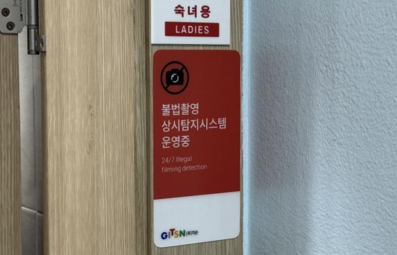

용산구, 공중화장실 40곳 AI 불법촬영 탐지시스템 구축…24시간 상시 감시
AI 열원·동작 감지로 불법촬영 선제 차단, 여성·장애인 칸 집중 설치

[시사포커스 / 김재록 기자] 서울 용산구(구청장 김경대)가 이달 초 지역 내 다중 이용 화장실 40곳에 '상시형 불법촬영 탐지 시스템' 설치를 완료하고 본격 운영에 들어간다고 밝혔다. 기존 일회성 점검 방식에서 벗어나 예방 중심의 안전관리 체계로 전환하기 위한 조치다. 설치 대상은 동 주민센터, 공원 내 개방화장실, 지역 주요 공중화장실 등 주민 이용이 빈번한 곳으로, 여성 및 장애인 화장실 칸에 집중 설치됐다.
시스템은 첨단 열원 감지와 인공지능(AI) 기반 동작 인식 기술을 결합해 설계됐다. 열원 감지 기능은 화장실 칸 내부에 은폐된 초소형 카메라 등 불법 기기가 발산하는 미세한 열원을 탐지해 추적한다. AI 동작 감지 기능은 칸막이 위로 휴대전화를 넘기는 등 불법 촬영이 의심되는 행동이 포착되면 즉각 경고 방송을 송출해 범죄 시도 자체를 현장에서 차단한다. 용산구에 따르면 이 시스템은 렌즈를 이용한 영상 촬영·녹화 방식이 아닌 열원과 이상 행동만을 감지·분석하므로 이용자의 신체나 모습을 촬영·저장하지 않아 개인정보 및 사생활 침해 우려가 없다. 김경대 용산구청장은 "구민의 안전은 사후 대응보다 선제적 예방에서 시작된다"며 "상시형 불법촬영 탐지시스템을 통해 예방 중심의 안전관리 체계를 구축하고 첨단기술을 활용한 생활밀착형 안전정책을 지속적으로 확대해 모두가 안심할 수 있는 용산을 만들어 가겠다"고 밝혔다.
운영은 전문 관제 체계와 연계해 365일 빈틈없이 이뤄진다. 불법촬영 의심 징후가 포착되면 구청 담당자에게 즉시 통보되며, 현장 확인 후 필요시 관할 경찰서와 긴밀히 공조해 신속한 현장 출동과 대처로 이어질 수 있도록 운영할 계획이다. 용산구는 향후에도 안전 취약 공간을 중심으로 시스템을 지속 확대하겠다는 방침이다.